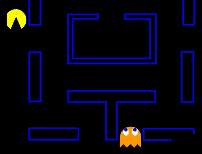

"BLINKY"
"BLINKY" "PINKY"
"PINKY" "INKY"
"INKY" "CLYDE"
"CLYDE" "АВТОР САЙТА"
"АВТОР САЙТА""CLYDE"
Оранжевое привидение, «Клайд», последнее привидение, остающееся в доме дольше всех, и не выходящее, пока как минимум треть точек не будет съедена. На английском его личность описывается как «тюремщик» (о_О — комментарий перев.) (pokey), в то время как с японского это otoboke — «притворяться, что игнорируешь». Как обычно, японский вариант более точен, метод таргетинга Клайда дает впечатление, что он просто «делает свое дело», не связанное с пакманом вообще. Уникальная фича таргетинга Клайда — это два режима, которые переключаются в зависимости от его удаленности от пакмана. Каждый раз когда Клайд должен вычислить свою целевую клетку, он сначала вычисляет расстояние до пакмана. Если оно больше 8 клеток, то он действует как Блинки, то есть его целью является сам пэкмен. Однако как только его расстояние до пэкмена становится менее восьми клеток, его целевая клетка устанавливается там же, где она была бы в режиме разбегания, неподалеку от левого нижнего угла лабиринта.
 ТСочетание этих двух методов и дает то, что Клайд постоянно меняет направление: то к пэкмену, то в другом направлении. На схеме выше крестиками отмечены места, где происходит переключение режимов. Так что если пакману каким-то образом удастся остаться на своем месте, Клайд будет бесконечно крутиться по этой петле. До тех пор пока игрок не находится в левом нижнем углу лабиринта, есть гарантия, что Клайда можно избежать, если вы не блокируете пути его отступления в свой угол. Пока пакман находится в восьми клетках от левого нижнего угла, петля Клайда будет иметь ту же форму, какую имела бы в режиме разбегания.